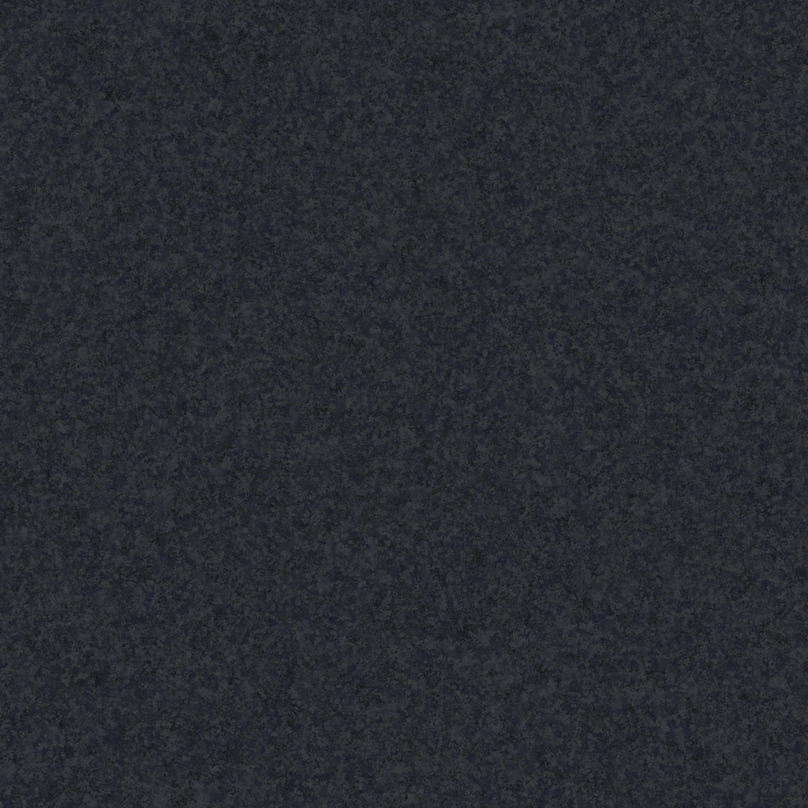

Lit double · 6
Kenney Furniture Kit · CC0
bedDoubleLes miniatures ci-dessous montrent les assets d’origine. Dans la scène, le mobilier est recoloré en ivoire, métal et terre cuite. Les cadres sont adaptés aux ouvertures, sans traverse centrale, avec bords adoucis ; les luminaires sont aplatis et allongés. Les textures sont teintées et répétées à l’échelle du mètre.
Furniture Kit · Space Station Kit · Plastic010 · Rubber004 · Metal032
Kenney Furniture Kit · CC0
bedDouble
Kenney Furniture Kit · CC0
bookcaseClosedDoors
Kenney Furniture Kit · CC0
tableRound
Kenney Furniture Kit · CC0
chairModernCushion
Kenney Furniture Kit · CC0
kitchenSink
Kenney Furniture Kit · CC0
kitchenStoveElectric
Kenney Furniture Kit · CC0
kitchenFridgeSmall
Kenney Furniture Kit · CC0
lampSquareCeiling
Kenney Space Station Kit · CC0
door-single
Kenney Space Station Kit · CC0
wall-switch
Kenney Space Station Kit · CC0
display-wallambientCG · CC0 · 1K
Plastic010
ambientCG · CC0 · 1K
Rubber004ambientCG · CC0 · 1K
Metal032Ajouts propres au projet : joints de panneaux, plinthes et rubans lumineux. Ils complètent les assets importés. Pas de mobilier dans les circulations, le cockpit ou le hangar.


Provisoire : salles de bain, détails de cockpit, portes arrière et extérieur. Les modèles restent simples et stylisés ; ce n’est pas un rendu final.